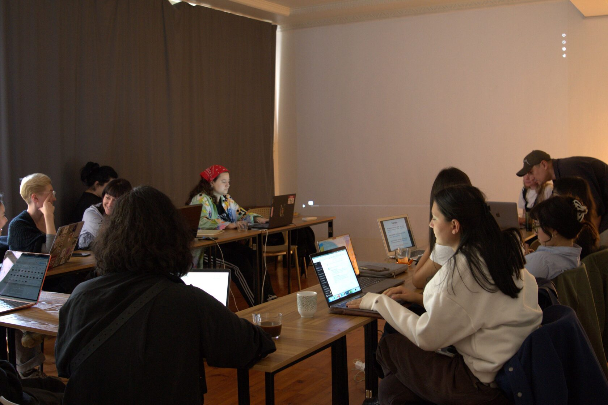
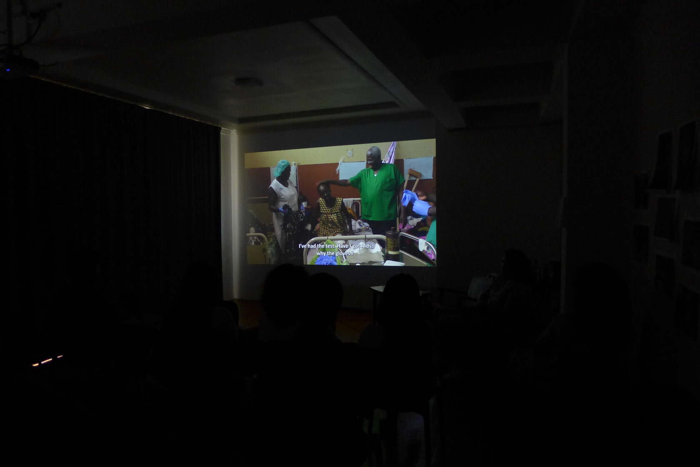

03.12.2025 · Workshop
TFS × Ateliers Varan
A joint documentary initiative supported by the French Ministry of Foreign Affairs and CFI. Seven weeks, a full production cycle and eight short films.
Selected courses, workshops, screenings, lectures and public programs preserved in the exported TFS materials.

A joint documentary initiative supported by the French Ministry of Foreign Affairs and CFI. Seven weeks, a full production cycle and eight short films.

A regional program of new French releases, documentary cinema, animation and classics.
A lecture by Alesya Kichko on silent cinema, Hollywood, costume history and the relationship between screen images and fashion.